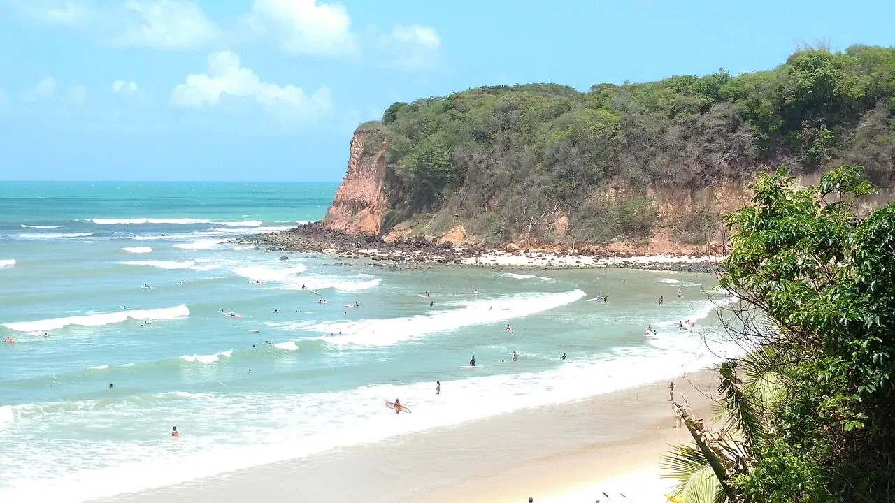

Praia da Pipa
Rio Grande do Norte, Brésil · surf, baignade

Falaises colorées, dauphins dans la baie et vagues douces. Un village animé du Nordeste.
- Lieu
- Rio Grande do Norte, Brésil
- Niveau
- Débutant
- Activités
- surf, baignade
- Type d'eau
- Mer / océan
- Coordonnées
- -6.23, -35.05 (position approximative du secteur)
Dangers à connaître
- Courants aux marées.
- Rochers au pied des falaises.
Le conseil d'Ocean Buddy
Observe les dauphins de la baie depuis l’eau sans les approcher.
Ouvrir dans Ocean Buddy Télécharger sur l'App Store
Source : Fiche Ocean Buddy · septembre 2026 · à vérifier localement.